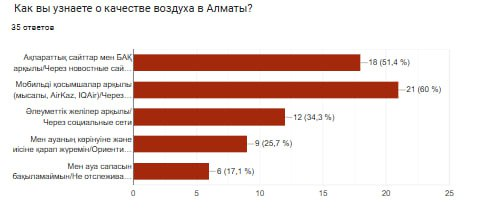

Выбросы в атмосферу

Прогноз качества воздуха
Последнее обновление: 2025-03-12 12:00
Ожидаемый уровень загрязнения PM2.5: 55 мкг/м³
Ожидаемый уровень загрязнения PM10: 60 мкг/м³
Температура: 3°C
Влажность: 70%
Скорость ветра: 10.8 км/ч
Почему важно следить за качеством воздуха?
Почему важно следить за качеством воздуха?
Качество воздуха – один из ключевых факторов, влияющих на здоровье и комфорт жизни в городе. Алматы, находясь в окружении гор, подвержен накоплению вредных веществ в атмосфере, особенно в зимний период. Основные источники загрязнения – транспорт, промышленность и бытовое отопление.
Почему важно следить за качеством воздуха?
Качество воздуха – один из ключевых факторов, влияющих на здоровье и комфорт жизни в городе. Алматы, находясь в окружении гор, подвержен накоплению вредных веществ в атмосфере, особенно в зимний период. Основные источники загрязнения – транспорт, промышленность и бытовое отопление.
Основные загрязнители воздуха
- PM2.5, PM10 – мельчайшие частицы пыли и сажи, вызывающие болезни дыхательной системы.
- CO (угарный газ) – невидимый и опасный газ, нарушающий доставку кислорода в организм.
- CO₂ (углекислый газ) – способствует изменению климата и накапливается в атмосфере.
- NO₂ (оксиды азота) – раздражают дыхательные пути, выбрасываются транспортом.
- SO₂ (диоксид серы) – вызывает кислотные дожди и проблемы с дыханием.
- O₃ (озон) – на больших высотах полезен, но у земли токсичен.
- NH₃ (аммиак) – выбрасывается сельским хозяйством, вреден для дыхания.
- H₂S (сероводород) – токсичный газ с резким запахом.
О проекте
Наш сервис помогает жителям Алматы следить за качеством воздуха в реальном времени. Мы собираем данные о загрязняющих веществах и погодных условиях, отображаем их на карте и предоставляем полезную аналитику. Наша цель – сделать информацию доступной и помочь в улучшении экологии города.
В рамках опроса среди жителей города Алматы, мы выявили актуальность веб-сайта для мониторинга качества воздуха.
Как вы узнаёте о качестве воздуха в Алматы?
Пройди опросник и улучшай свою жизнь!